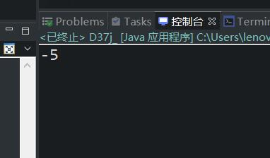

原文连接:https://www.cnblogs.com/ruigege0000/p/11639132.html
一、IDE上继续新建工程
1.在src目录下新建软件包：package机制后面再讲，目前先用着
2.给package命名一个名称：com.bjpowernode.java_learning
3.软件包下新建一个类
4.软件包是Java语法中的一部分，后面再讲
面向对象的封装性
二、快捷键
CTRL + D ：删除一行
ALT + / ：自动补全
CTRL + ALT + 向下的箭头：复制一行
注意：IDE中的内容不保存是不会编译的，因此时刻要保存
main方法自动补全：输入main，然后CTRL + / 则会自动补全main方法
三、面向对象的封装性
1.封装的好处：
（1）封装之后，对于那个事物来说，看不到这个事物的复杂的那一面，只能看能该事物简单的那一面。复杂性封装，对外提供简单的操作入口，照相机就是一个很好的封装的案例，照相机的实现原理是非常复杂的。电视机的内部实现也是非常复杂的，但是对于使用者来说不需要关心内部的实现原理，只需要会操作遥控器就可以了。
（2）封装之后会形成真正的“对象”，真正的“独立体”
（3）封装就意味着以后的程序可以重复使用，并且这个事物应该适应性比较强，在任何场合都可以使用。
例子：
下面的User类我们可以直接访问它的age信息
一个User对象表示一个用户，用户的年龄不可能是负数，以下程序中年龄值，为负数，程序运行的时候并没有报错，这是当前程序的缺陷
package com.bjpowernode.java_learning;
public class D37_encapsulation {
public static void main(String[] args) {
// TODO Auto-generated method stub
User user = new User();
user.age = -5;
System.out.println(user.age);
}
}
class User{
String name;
int age;
}
四、源码：
D37_encapsulation.java
地址：
https://github.com/ruigege66/Java/blob/master/D37_encapsulation.java
2.CSDN：https://blog.csdn.net/weixin_44630050（心悦君兮君不知-睿）
3.博客园：https://www.cnblogs.com/ruigege0000/
4.欢迎关注微信公众号：傅里叶变换，个人公众号，仅用于学习交流，后台回复”礼包“，获取大数据学习资料